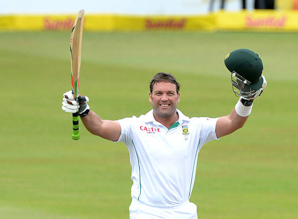
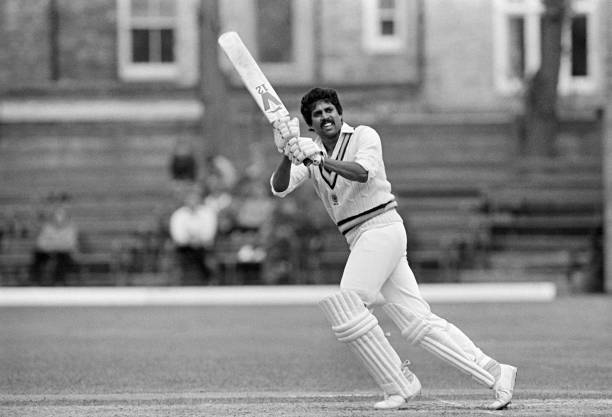
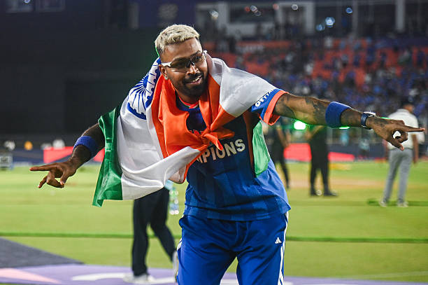
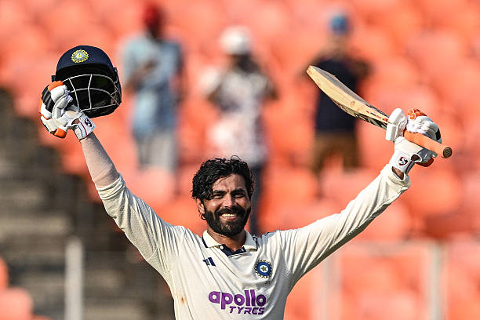
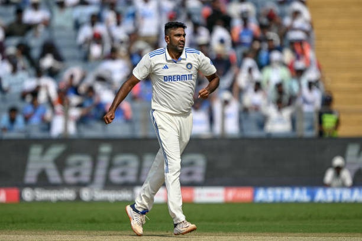
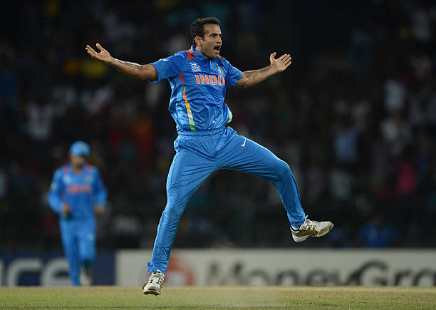

CRICKBOYZ
Website Created by: MAHIR CHAVDA
" THEY ARE NOT IN ANY PARTICULAR ORDER, THEY ARE ALL GREAT PLAYERS."
1.JACQUES KALLIS

Full Name: Jacques Kallis
Date of Birth: 16 October 1975
Birthplace: South Africa
Nationality: South African
Role: All-rounder
Batting Style: Right-handed
Nickname: Kallis
- Kallis is one of the greatest all-rounders.
- He scored over 25,000 international runs.
- He took more than 500 wickets.
- He was very consistent.
- Kallis was strong in Test cricket.
- He played many match-winning innings.
- He is a South African legend.
2.KAPIL DEV

Full Name: Kapil Dev Ramlal Nikhanj
Date of Birth: 6 January 1959
Birthplace: Chandigarh, India
Role: Fast Bowling All-rounder
Batting Style: Right-handed
Nickname: Haryana Hurricane
- Kapil Dev is one of the greatest all-rounders in cricket history.
- He led India to its first Cricket World Cup victory in 1983.
- He was known for powerful batting and fast bowling.
- Kapil Dev took more than 400 wickets in Test cricket.
- He played many match-winning innings.
- He is a legend of Indian cricket.
3. HARDIK PANDYA

Full Name: Hardik Himanshu Pandya
Date of Birth: 11 October 1993
Birthplace: Gujarat, India
Nationality: Indian
Role: All-rounder
Batting Style: Right-handed
Nickname: Kung Fu Pandya
- Hardik Pandya is known for his explosive batting.
- He is also an effective medium-fast bowler.
- Hardik has played many match-winning innings for India.
- He is one of the most dynamic players in modern cricket.
- Hardik is very aggressive.
- He is a key player in T20 cricket.
- He has captained IPL teams.
- He is one of India’s best modern all-rounders.
4.RAVINDRA JADEJA

Full Name: Ravindra Jadeja
Date of Birth: 6 December 1988
Birthplace: Gujarat, India
Role: Spin Bowling All-rounder
Batting Style: Left-handed
Nickname: Sir Jadeja
- Ravindra Jadeja is one of the best fielders in world cricket.
- He is known for accurate left-arm spin bowling.
- Jadeja has scored many important runs for India.
- He plays a crucial role in all formats of cricket.
- He is a match-winner for India.
- He performs well in all formats.
- He is a complete all-rounder.
5. RAVICHANDRAN ASHWIN

Full Name: Ravichandran Ashwin
Date of Birth: 17 September 1986
Birthplace: Chennai, India
Role: Spin Bowling All-rounder
Batting Style: Right-handed
Nickname: Ash
- Ashwin is one of the most successful spin bowlers in India.
- He has taken more than 400 wickets in Test cricket.
- He is also capable of scoring valuable runs.
- Ashwin is known for his smart bowling strategies.
- Ashwin performs well in Tests.
- He is very experienced.
- He is a match-winner for India.
6. IRFAN PATHAN

Full Name: Irfan Khan Pathan
Date of Birth: 27 October 1984
Birthplace: Gujarat, India
Role: Fast Bowling All-rounder
Batting Style: Left-handed
Nickname: Irfan
- Irfan Pathan was one of India's best swing bowlers.
- He is famous for taking a hat-trick in the first over of a Test match.
- He was a key player in India's 2007 T20 World Cup victory.
- He was a key player in 2007 T20 World Cup.
- He could bat well under pressure.
- He played many match-winning performances.
- He was an important all-rounder.
- He is loved by cricket fans.